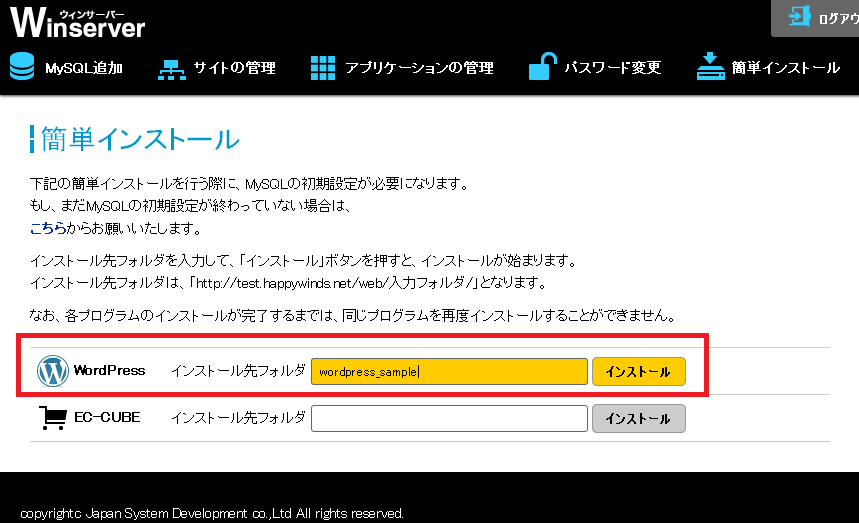
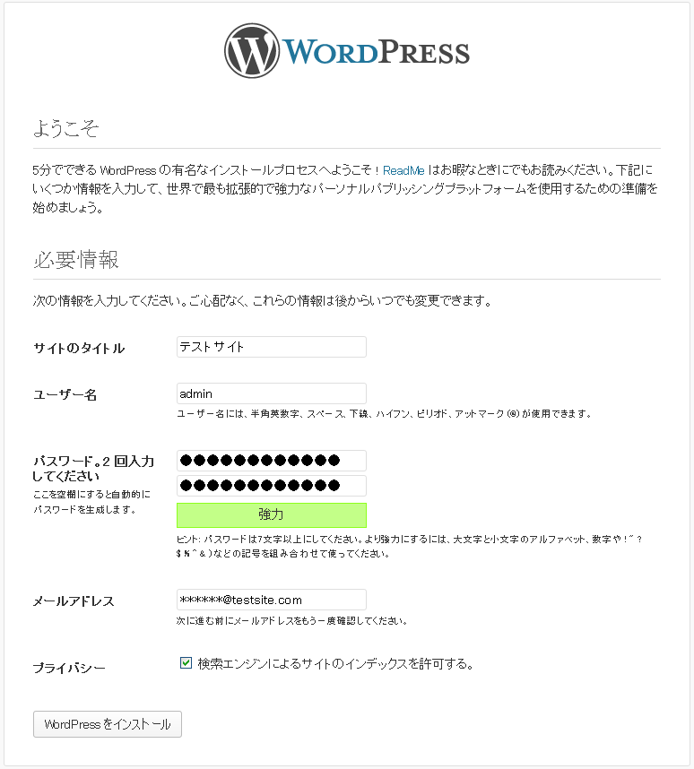
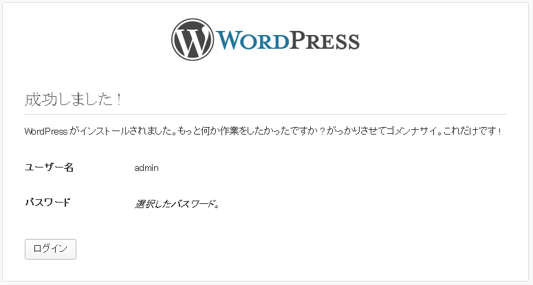

WordPressをご利用いただく際には、あらかじめMySQLのデータベースを追加する必要がございます。
こちらで、あらかじめデータベースを作成して、その時に入力したデータを保存しておいてください。
コントロールパネルの簡単インストール機能でWordPressを選択して、
インストールボタンを押されますと、5分以内にWordPressがインストールされます。

5分程度お待ちいただきましたら、http://ご契約ドメイン/インストール先フォルダ/にアクセスしてください。
サイトのタイトルなどを求められますので、ご入力いただき、「WordPressをインストール」ボタンを押してください。

WordPressのインストールは完了となります。
